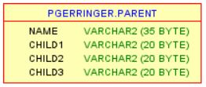
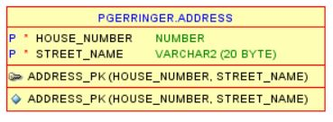
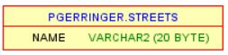
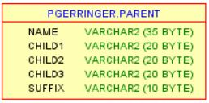
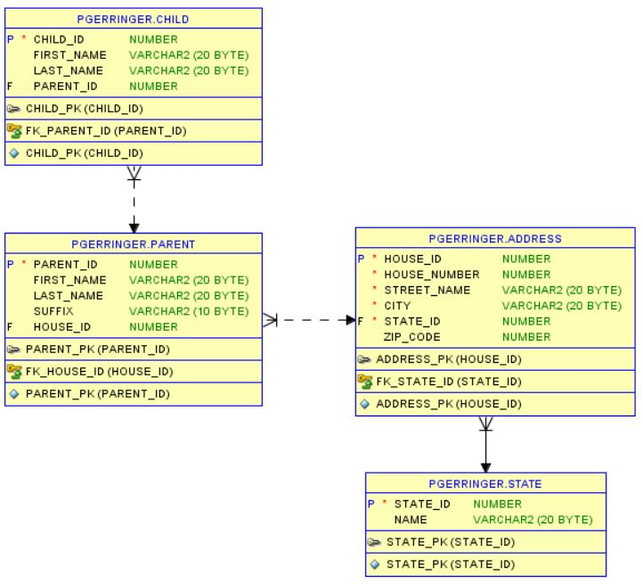

Normalization is a database design technique which organizes tables in a manner that seeks to eliminate redundant data and ensure dependency of data.
| Form | Rules | Example |
|---|---|---|
| 1st |
|

In this example notice there is no primary (PK) key. The NAME field also implies that first name and last name are included as values in the field. Also, note the children seem to have their own column. This example violates Normal Form 1. |
| 2nd |
|

In this example, notice the ADDRESS table has a composite key consisting of HOUSE_NUMBER and STREET_NAME. If the STREETS table had a foreign (FK) key between its NAME field and ADDRESS.STREET_NAME then a partial dependency would exist. Only half of the PK in STREETS is mapped to an FK and 2nd Normal Form would have been violated. |
| 3rd |
|

In the example above, a SUFFIX field has been added. Imagine a row is referencing Mr. Bob Crane. If we change the NAME to Betsy Crane, the SUFFIX will also need to be changed to Ms. This would violate 3rd Normal Form. |
| Solution | |
|---|---|
|  |
The above proposes several violations of normalization. The ERD to the left is a suggestion as to a schema that exists in 3rd Normal Form. Notice:
|